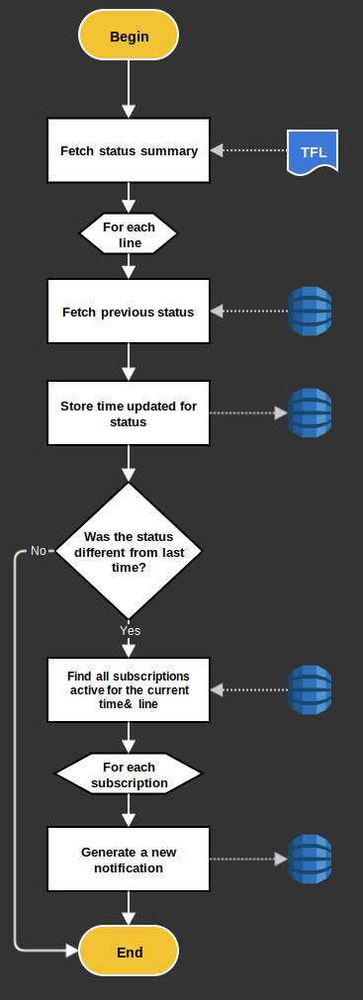

There are many steps to this project. You may only be interested in a small part, so here’s the table of contents.
Technologies used in this project:
https://www.tubealert.co.uk is a simple application intended to be a super-fast way of identifying the current state of the London Underground system. The site loads with just the information in a quick and uncluttered form. It is also possible (where supported) to subscribe to alerts and be notified when your line has a problem, during the times you care about. (add gifs).
Only Google Chrome is currently supported, although Firefox is now capable of receiving notifications so that needs updating.
Currently the application is hosted on a Virtual Private Server costing $5 per month. Can this be changed?
The data that exists currently is modelled and stored in a relational database. ( Entity list )
This is a fixed set of lines on the London Underground with information about their name, colour and url-key. There is a denormalized column in here that is a foreign key to the most recent status update, to save having to calculate this on the fly from the Status table.
This entity is populated by the statuses for each line provided by TFL. Nothing is deleted here so an archive is kept. This will get very big and slow to query for the most recent status per line, hence the denormalized column in the Line table.
This is a subscription window for a user. Each continuous chunk of time for a single line counts as a separate subscription. This means a single user can have many subscriptions. If this was a complete relational model that would give rise to a User entity, but that has not been done here. A User’s subscription credentials are being replicated in every subscription row. This is acceptable as there is no need to make any changes to those details and therefore cascade them.
Due to the way web push notifications work (at least did at the time of build) very little data could be sent directly to the user. All that happens in the user’s service worker is told that a notification exists. It then has to make a request to find out what the contents of that notification should be.
The Notification entity therefore stores the contents of those notifications. A request is made and the latest unprocessed notification for that use is found. The User ID is again stored directly in this table so this table is completely isolated.
These are virtual domain objects to make sense of the data retrieved from the TFL API. They are not persisted.
There are several discrete pieces of work that application has to do.
The first (and obviously most important) task is to fetch the source data from TFL. TFL offer a lot of free Open Data for this purpose, which is a fantastic resource. Periodically we need to fetch the latest tube status data from the available JSON feeds. This happens every minute on a Cron job.

Overall, the data is fetched and stored, and if a status has changed the subscribers are informed. There are API calls to TFL and to Google (as only Chrome is supported presently). There are also several database calls. Can any of this be simplified or separated? This all happens currently via the following code.
At the start of every new hour we need to check if any subscriptions windows have just come into action. If they have and their line currently has a problem, we notify that user. This runs via an hourly Cron job at 1 minute past the hour.
A user can only subscribe to one line at a time. They may subscribe to many time windows in one go though, so that has to be reconstructed into a series of separate subscriptions. As this is user input, there must be some validation performed on the incoming data.
This workflow simply deletes all subscriptions for a user
There are some reading workflows, to generate pages and feeds for notifications:
Analysing the domain model and the workflows we need, we probably don’t need the data to be fully relational. There is already some denormalisation happening and there are no complex queries that strictly need the data in this relational format.
Everything is hosted on one machine with no backup and no redundancy. It is built in PHP and Symonfy.
No server. Automatic backup and redundancy. Free. Lambda, so NodeJS. We can also break up some of the workflows.
Chrome no longer needs Google? Chrome no longer needs separate server call?
I am using Windows 10, but most of these tools run best in a linux/bash environment. Also, I'd rather not go installing things all over my personal machine. Luckily Windows 10 now offers Bash on Ubuntu. So I can use all the tools, and they are all contained.
Let’s start with simple Lambda functions to get the latest data from TFL and store it in static JSON in S3. Working with Apex (ENV variables and lambda-local).
APEX
Just to see something working a quick page was thrown together with simple JavaScript fetching the file that was saved to S3 by the Lambda. This was uploaded manually to S3 so it was on the same domain as the JSON file. (setting up web hosting)
This works and shows the list of lines, with those currently disrupted shown by an X
The application needs to be a bit more complicated that this. So, here we build a small react application, host it on S3 (deploy process). Ensure cache-headers are set correctly. Sass and build process.
So far all the AWS changes have been direct in the console; just sort of figuring it out as we go along. This isn't particularly robust. We need to be able to describe exactly the setup we need to power this infrastructure. This way it is safe and reproducible. To do, this we'll use Cloudformation, Amazon's format for description cloud infrastructure. This format is generally in JSON or YAML, but can be very verbose and difficult to build hand. Luckily we have troposphere
Because we are use hash
Monitor each time it runs, and check logs for errors. E-mail if there are errors?
Here we add a service worker for offline. Need to go HTTPS (Cloudflare). Add manifest etc.
Now we have to support notifications we need to have a proper data store. More Lambda, and DynamoDB
There is a problem here in that /bakerloo-line doesn't work. I would much prefer to have the website be super fast on initial load, and that can only really happen if it renders on the server. Can a Lambda be used to generate a full static site?
We’ve been collecting all this data and throwing it away. Can we show historical records? We need to store more data.